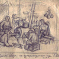

Заключенный: Лев Копелев
Днем стало нестерпимо жарко и душно. Мы сидели в одних кальсонах. Горло стягивало жаждой…Но парашу выносить можно было только когда наполнится. Приходилось долго упрашивать коридорного. Зато назначать носильщиков оказалось просто. Нашлось множество охотников тащить зловонную бочку, – по пути они могли напиться из крана…И на третье утро хлеба не было. Вопли “хле-е-ба!” слышались все чаще, все громче и протяжнее. И еще злее кричали с вышек часовые, иногда, впрочем, казалось, они кричат не со злостью, а с отчаянием.Чаще постукивали ввыстрелы…В обед раздатчики баланды сказали: “Хлеба нет, потому что пекарня сгорела. Обещают с другой взять, но когда, неизвестно. Сегодня уже троих застрелили, кто с окон кричал.”

By a Stove
Холод
Заключенные Гулага работали в самых суровых населенных климатических условиях на планете, либо у северного полярного круга или глубоко в тайге и степях Сибири и Центральной Азии. Часто заключенных заставляли работать на улице при температуре минус 30 -40 по Цельсию (от -22 до -40 градусов по шкале Фаренгейта) при наличии сильного ветра.
В данном отрывке из документального фильма «Красный Флаг» бывший заключенный Гулага Михаил Миндлин вспоминает холод и голод своего заключения.
Movie Transcription
Михаил Миндлин «Сначала я работал на БАМе, потом в Колыме. Самое важное было—не умереть от голода. Мы получали баланду—суп в котором болталось немного рыбьих хребтов и зерен овса. Мы пили из железных мисок. Нам давали половник и комок хлеба. Мы едва могли работать из-за холода. Если бы мы не двигались или не работали, мы бы замерзли. Когда кому-то надо было отправить нужду, они должны были снять варежки. К тому времени, как они расстегнули штаны, их руки уже замерзали. Как только они его вынимали, он тоже замерзал. Многим людям эти части ампутировали.” “Не было никаких уколов или других средств против боли. Не было даже необходимых скальпелей. Когда я был в лагере, меня попросили протянуть мою отмороженную ступню. И плоскогубцами просто отломали отмороженные части. Это и было лечение—операция. Считалось, если ты пережил первую зиму, ты проживешь весь срок. Большинство не выживали.”